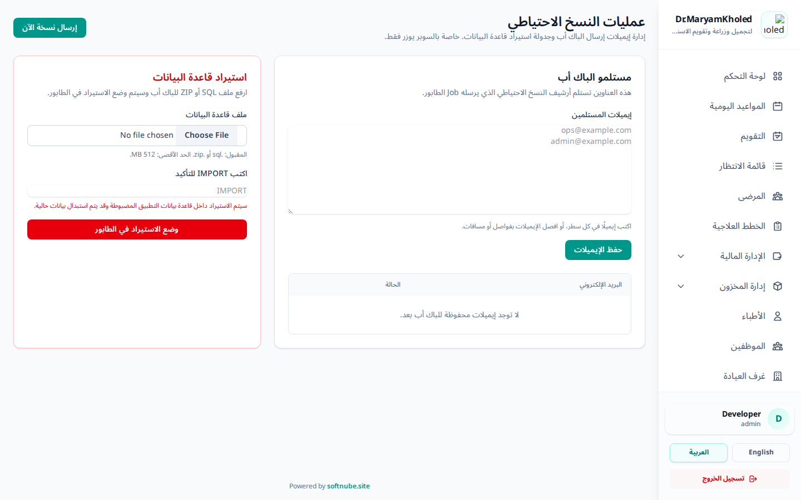

جديد تتيح شاشة "عمليات النسخ الاحتياطي" حماية بيانات العيادة عبر إنشاء نُسخ احتياطية وإرسالها بالبريد الإلكتروني، إضافةً إلى استيراد/استعادة قاعدة البيانات عند الحاجة.
🛡️
خاصة بالمستخدم الأعلى (Super User) فقط: الوصول إلى هذه الشاشة محصور بحساب المستخدم الأعلى. تجدها عبر الرابط /admin/backups أو من بطاقة "النسخ الاحتياطي" في لوحة المشرف.

شكل 1: شاشة عمليات النسخ الاحتياطي — استيراد قاعدة البيانات (يسار) وإدارة مستلمي البريد (يمين)
تحدّد هذه البطاقة عناوين البريد التي تُرسَل إليها النسخة الاحتياطية:
- اكتب عناوين البريد في الصندوق — عنوان واحد في كل سطر (أو افصلها بفواصل/مسافات).
- اضغط "حفظ الإيميلات" لتثبيت القائمة.
- تظهر العناوين المحفوظة في الجدول أسفل البطاقة.
ℹ️
يتحقّق النظام من صحة صيغة كل بريد، ويرفض الحفظ إن كان أحدها غير صالح. إن لم تُحفظ أي عناوين هنا، يستخدم النظام العناوين الاحتياطية المضبوطة في إعدادات الخادم.
لإنشاء نسخة احتياطية فورية وإرسالها للمستلمين المحفوظين، اضغط زر "إرسال نسخة الآن" أعلى الشاشة.
- تُنشأ النسخة وتُرسَل في الخلفية (عبر الطابور)، فلن تنتظر اكتمالها على الشاشة — تظهر رسالة "تم إدراج المهمة".
- إن لم يكن هناك أي مستلم محفوظ، يطلب منك النظام إضافة مستلم أولاً.
💡
وصول رسالة البريد يعتمد على ضبط الخادم (بيانات SMTP وعامل الطابور). إن لم تصل النسخة، راجع مسؤول النظام للتأكد من تشغيل عامل الطابور وإعدادات البريد.
إلى جانب الإرسال اليدوي، يُجري النظام نسخاً احتياطية تلقائية يومياً دون أي تدخل، تعمل في الخلفية على الخادم:
- إنشاء نسخة احتياطية يومياً (الوقت الافتراضي 02:00 فجراً).
- إرسالها بالبريد للمستلمين (عند تفعيل ذلك في إعدادات الخادم).
- تنظيف النسخ القديمة ومراقبة صحة النسخ يومياً.
⚙️
أوقات الجدولة وتفعيلها يضبطها مسؤول النظام في إعدادات الخادم؛ لا تتطلب أي إجراء يومي من المستخدم.
تتيح بطاقة "استيراد قاعدة البيانات" رفع نسخة احتياطية سابقة لاستعادة بيانات العيادة:
- اضغط "Choose File" واختر ملف النسخة — يُقبل .sql أو .zip (بحد أقصى 512 ميجابايت).
- اكتب كلمة IMPORT في حقل التأكيد (خطوة حماية إلزامية).
- اضغط الزر الأحمر "وضع الاستيراد في الطابور".
- تُعالَج الاستعادة في الخلفية عبر الطابور.
🚨
عملية مدمِّرة لا رجعة فيها: الاستيراد يستبدل بيانات قاعدة البيانات الحالية بمحتوى الملف المرفوع. تأكّد تماماً من صحة الملف، ويُفضّل أخذ نسخة احتياطية حديثة قبل أي استعادة. لهذا السبب تقتصر هذه العملية على المستخدم الأعلى وتتطلب كتابة "IMPORT" يدوياً.
قبل الاعتماد على النسخ الاحتياطية في حالة طوارئ حقيقية، يُنصح بإجراء تجربة استعادة دورية:
- نزّل أحدث نسخة احتياطية من وجهة التخزين المضبوطة.
- استعِدها على قاعدة بيانات تجريبية منفصلة (لا الإنتاج).
- تحقّق من إمكانية تسجيل الدخول وظهور الشاشات المالية الأساسية.
💡
تأكيد أن النسخة الاحتياطية قابلة للاستعادة فعلاً لا يقل أهمية عن إنشائها — اجعلها عادة دورية.